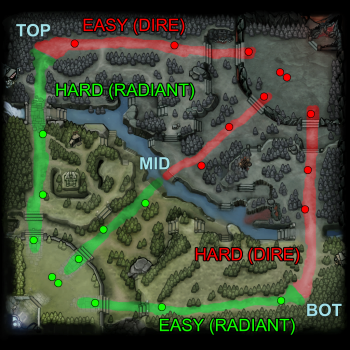

| SO: | Windows 7 |
|---|---|
| Procesador: | Dual core de INtel o AMD a 2.8GHz |
| Memoria: | 4GB RAM |
| Gráficos: | nVidia GeForce 8600/9600GT, ATI/AMD Radeon HD2600/3600 |
| DirectX: | Versión 9.0c |
| Red: | Conexión de banda ancha a Internet |
| Almacenamiento: | 15GB de espacio disponible |
| Tarjeta de sonido: | DirectX Compatible |
| SO: | OS X Mavericks 10.9 |
|---|---|
| Procesador: | Dual core de Intel |
| Memoria: | 4GB RAM |
| Gráficos: | nVidia 230M, Radeon HD 2400, Intel HD 3000 |
| Red: | Conexión de banda ancha a Internet |
| Almacenamiento: | 15GB de espacio disponible |
| SO: | Ubuntu 12.04 |
|---|---|
| Procesador: | Dual core from Intel or AMD at 2.8 GHz |
| Memoria: | 4GB RAM |
| Gráficos: | nVidia Geforce 8600/9600GT, AMD HD 2xxx-4xxx, Intel HD 3000 |
| Red: | Conexión de banda ancha a Internet |
| Almacenamiento: | 15GB de espacio disponible |
| Tarjeta de sonido:: | OpenAL Compatible Sound Card |
Por Teo Waelder
Dota 2 es un videojuego del género ARTS («estrategia de acción en tiempo real»), también conocido como MOBA, lanzado el 9 de julio de 2013. El juego fue desarrollado por Valve Corporation y anunciado oficialmente el 13 de octubre de 2010; posteriormente, entró en su etapa Beta a principios del 2011, y finalmente se lanzó al público en general a través de Steam el 9 de julio de 2013 para Microsoft Windows, y el 18 de julio de 2013 para OS X y Linux. El 17 de junio de 2015 Valve lanzó la beta del juego usando el nuevo motor gráfico Source 2 [Dota 2 Reborn], cliente que será el único y definitivo poco después del The International 2015. La versión con el nuevo motor se mantuvo fiel a su predecesor, a la vez que incrementó la calidad del producto final, además de ofrecer una experiencia envolvente y gratificante para los jugadores. Actualmente es el juego más jugado de Steam con más de 40.6 millones de jugadores únicos que se conectan casi en su totalidad con frecuencia diaria y ha llegado a ser incluido en el Guinness World Records Gamer's Edition.
Valve Corporation organiza de manera anual el campeonato mundial The International, que en su primera edición fue jugado en Colonia, Alemania, en el 2011. La edición 2014 en Seattle, Estados Unidos, repartió 10.927.499 US$, y en su edición 2015 repartió 18.429.613 US$. Valve también organiza cada año otros tres torneos mundiales de menor importancia conocidos como los Majors, que reparten un total de 3.000.000 US$.
Además, de manera independiente, distintas sociedades organizan sus propios torneos profesionales y amateurs.
Mapa
Una partida de Dota 2, cuenta con una fortaleza para cada una de las dos facciones opuestas, Los Dire y Los Radiant ,que contienen una estructura principal a la que se le denomina como Ancestro, que son defendidos por varios edificios más pequeños. Ambas bases opuestas están conectadas por tres caminos principales, a los que se suele referir también como líneas o carriles, estos se encuentran vigilados por una sucesión de tres torres defensivas, así como la aparición periódica (cada minuto) de grupos de unidades autónomas llamadas "creeps" que avanzarán por cada carril atacando a todas las unidades o estructuras enemigas con las que entren en rango de visión. Los creeps de cada línea que aparecen cada minuto lo harán más fuertes si un equipo destruye los barracones enemigos situados dentro de la fortaleza respectiva.
Las Torres y creeps sirven para dividir el juego entre ambos equipos; cada uno de los equipos está simbolizado con un color (Radiant como verde, Dire como rojo) además, las primeras son a menudo el punto focal de escaramuzas entre los dos equipos. El mapa de Dota 2 es, en su función, simétrico, a pesar de tener una serie de diferencias fundamentales que confiere una serie de ventajas y desventajas a cada lado. La base Radiant se encuentra en la esquina suroeste del mapa, mientras que la base Dire esta en la esquina noreste, las dos partes están divididas por un río que divide el mapa diagonalmente por la mitad.
El objetivo final de ambos equipos es destruir el Ancestro del oponente. Para ello, deben utilizar sus oleadas de creeps y los propios héroes para destruir las torres del enemigo y así poder avanzar hasta la fortaleza rival al mismo tiempo que luchan contra los héroes y creeps enemigos para evitar que hagan lo mismo.
Los héroes son un elemento esencial de Dota 2, ya que el rumbo de la partida depende directamente de su impacto. Los jugadores se reparten en dos equipos de 5, y pueden elegir un héroe desde el panel de selección al inicio de la partida. Todos los héroes tienen un estilo de juego que es resultado de sus Habilidades únicas y combinaciones de Atributos. A lo largo del juego los héroes acumularán Experiencia. Una vez que los héroes tienen suficiente experiencia, subirán de nivel, haciéndose más fuertes que antes y permitiéndoles mejorar sus habilidades. A medida que destruyen creeps, héroes y torres, también podrán comprar objetos que harán sus personajes más fuertes.
Existen 111 héroes distintos en Dota 2.
Hay 10 modos de juego :
Cabe destacar que la partida también puede terminar si todos los héroes de un equipo abandonan la partida y gana el equipo que no abandono.
Elección Libre: Cada jugador puede elegir cualquier héroe disponible.El juego finaliza cuando se destruye la torre central (Ancient).
Todos Aleatorio: Cada jugador recibirá un héroe al azar.El juego finaliza cuando se destruye la torre central (Ancient).
Selección Simple: Cada jugador elegirá uno de los tres héroes seleccionados al azar para él.El juego finaliza cuando se destruye la torre central (Ancient).
Selección Aleatoria: A cada jugador se le asignará un héroe escogido al azar, que podrá intercambiar con algún aliado si este está de acuerdo.El juego finaliza cuando se destruye la torre central (Ancient).
Modo Capitán: A cada equipo se les asigna a un capitán. Por turnos, los capitanes también elígen héroes para su equipo y prohíben héroes entre los disponibles para que no puedan elegirse. El juego finaliza cuando se destruye la torre central (Ancient).
Selección con Capitán: A cada equipo se les asigna a un capitán para que elija los héroes para su equipo entre un grupo limitado.El juego finaliza cuando se destruye la torre central (Ancient)
Menos Jugados: Los jugadores solo pueden elegir entre sus héroes menos usados. Este modo es ideal para aprender héroes nuevos ya que todos estarán en igualdad de condiciones.El juego finaliza cuando se destruye la torre central (Ancient)
Héroes Limitados: Juega con héroes recomendados para jugadores nuevos. El juego finaliza cuando se destruye la torre central (Ancient)
Selección de Habilidades: Crea un héroe único seleccionado entre un conjunto de habilidades.El juego finaliza cuando se destruye la torre central (Ancient)
1 vs 1 Mid: Modo enfrentamiento de un jugador en la senda central. Gana quien elimine al enemigo dos veces o destruya la torre central primero. No se puede ver el héroe escogido por el enemigo y pueden haber héroes duplicados.Generalmente se recomienda usar héroes que tienen habilidades para bajarle la vida al héroe enemigo en poco tiempo (ZEUS, OGRE, ETC ) o héroes que tengan facilidad para romper torres (sniper, drow ranger, etc)
Todos aleatorio a muerte: Cada jugador recibe un héroe el cual será sustituido por otro de forma aleatoria al morir, cada equipo tiene solo 40 vidas. El juego finaliza cuando se destruye la torre central(Ancient) contraria o los 5 jugadores pierden sus 40 héroes disponibles
La primera aparición de Dota fue como un mapa para el juego Warcraft III: Reign of Chaos llamado Defense of the Ancients, que fue creado con el software Warcraft III World Editor desarrollado por Blizzard. Este mapa fue abreviado a "DotA", originalmente fue creado por el usuario anónimo "Eul", que se basó en el mapa de StarCraft "Aeon of Strife".8 Cuando Blizzard Entertainment lanzo la expansión The Frozen Throne en 2003, Eul abandonó la edición del mapa y otros editores de mapas retomaron su trabajo por iniciativa propia, desarrollando diferentes versiones del mapa original, incluyendo nuevos héroes, artículos y diversas características. La versión más acogida por los jugadores fue "Dota: All Stars", desarrollado por Steve "Guinsoo" Feak, que incluyó en su versión características de otras variantes. Con la ayuda de un miembro de su clan, Steve "Pendragon" Mescon, una fuente de recursos para Dota así como un centro para la comunidad fueron creados en el sitio web dota-allstars.com. En 2005, el cargo de Feak como líder de desarrollo y diseño le fue cedido a IceFrog, otro miembro de su clan.
La popularidad de Defense of the Ancients incremento dramáticamente, pues el mapa se convirtió en un elemento importante en el campo de los deportes electrónicos. En un artículo sobre la industria de los videojuegos en el sitio web Gamasutra, el editor Michael Walbridge citó a Dota como el MOD más popular del mundo, así como uno de los títulos competitivos más populares, con una fuerte presencia en Asía, Europa y Norte América. En mayo de 2009, a medida que el género del juego se volvía más prometedor, IceFrog se apropió de DotA y se separó de Menscon; mientras que IceFrog formó una nueva comunidad oficial de jugadores en la página web playdota.com, Feak y Menscon se unieron a Riot Games, con el apoyo de dicha empresa crearon otro juego independiente inspirado en Dota.
Dota comenzó a tener mucho éxito y jugadores , siendo apoyado principalmente por foros donde los mismos jugadores opinaban sobre las características que podrían tener nuevos héroes o las mejoras que el juego podría presentar. Se creó una comunidad en torno al título, la cual fue creciendo y finalmente el juego, bajo el mando del misterioso jugador IceFrog (heredero de la franquicia cuya identidad real ningún jugador conoce), fue cobijado por la compañía Valve Corporation , alejándose de Blizzard y Warcraft.
En 2011 y bajo el nombre DOTA 2 , el juego se oficializó y vio la luz. Si bien el concepto y los héroes siguieron siendo los mismos, por temas de derechos de autor hubo que cambiar nombres de personajes y características gráficas. Además, ese mismo año se realizó el primer torneo mundial "The International" y este año 2016 volvió con su sexta versión bajo el nombre "The International 6" (TI6), contando con jugadores de todo el globo.